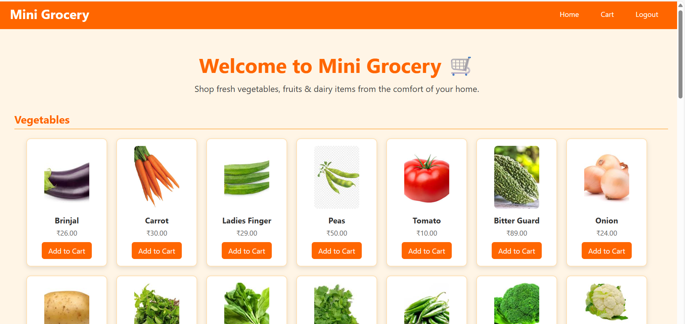
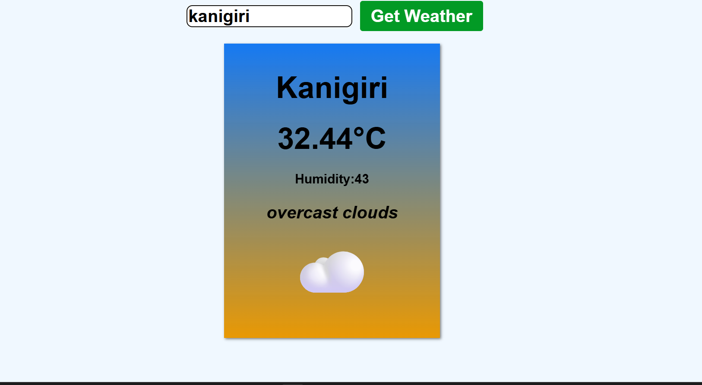
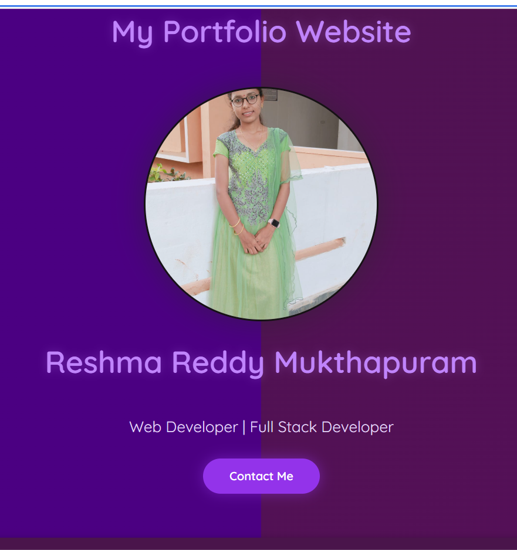
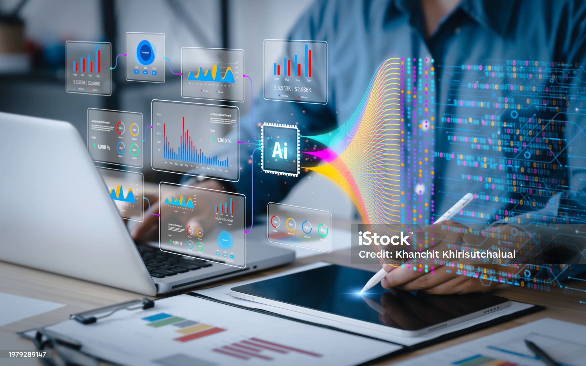
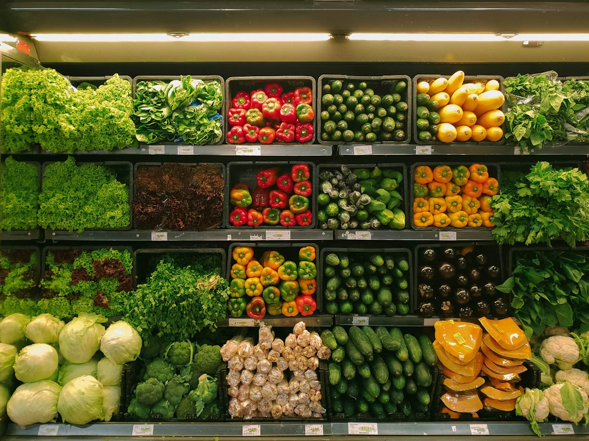

Projects

Spotify Clone Using React
Tools & Technologies: React.js, Tailwind CSS, Vite, React Router
Built a responsive music web application with modern UI, sidebar navigation, trending songs, and artist listings similar to Spotify.

Mini Grocery E-commerce Website
Tools & Technologies: PHP, MySQL, HTML, CSS, JavaScript
Developed a full-stack grocery website with cart system, order placement, category-wise products, and admin panel management.

Weather API App
Tools & Technologies: HTML, CSS, JavaScript, OpenWeather API
Created a real-time weather application that fetches live weather data based on city search with temperature and conditions.

Personal Portfolio Website
Tools & Technologies: HTML, CSS, JavaScript
Designed a responsive personal portfolio website showcasing skills, projects, and contact information with smooth scrolling UI.

AI-Driven Multilingual Depression Detection
Tools & Technologies: Python, IndicBERT, MuRIL, CNN, LSTM, MFCC
Built an AI system that detects depression levels from text and speech data using NLP and deep learning models.
Sales Performance Dashboard
Tools & Technologies: Power BI, SQL
Developed an interactive dashboard to analyze sales KPIs, improve reporting efficiency, and support data-driven decisions.

Market Basket Analysis
Tools & Technologies: Python, Pandas, Apriori Algorithm, Tableau
Analyzed customer purchase patterns and visualized cross-selling opportunities using data mining techniques.